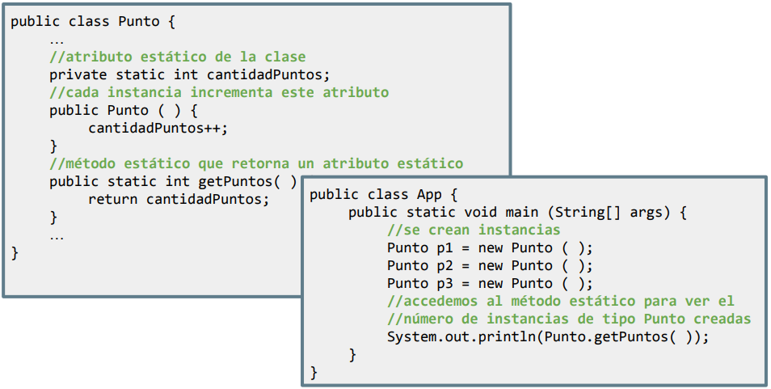

En Java, la palabra reservada static se utiliza para declarar atributos o métodos que pertenecen a la clase, pero no a las instancias de la clase. Los elementos estáticos son compartidos por todas las instancias de la clase, y no es necesario crear un objeto para acceder a ellos.
Atributos estáticos
Teniendo en cuenta lo que acabamos de comentar, podemos decir que un atributo estático pertenece a la clase y no a los objetos creados a partir de la clase. Por lo tanto, cambiar el valor de un atributo estático afecta a todas las instancias de la clase.
public class Contador {
public static int contador = 0;
Contador() {
contador++;
}
}
public class Main {
public static void main(String[] args) {
Contador obj1 = new Contador();
Contador obj2 = new Contador();
Contador obj3 = new Contador();
System.out.println("Objetos creados: " + Contador.contador); // Salida: 3
}
}Métodos estáticos
Como ya sabemos del tema anterior, un método estático puede ser invocado sin crear una instancia (objeto) de la clase. Pero en la POO, deberemos cumplir ciertas reglas si queremos crearlos como static:
- No deben acceder a atributos o métodos de instancia directamente.
- Sólo pueden usar atributos y métodos estáticos (o parámetros, si es que reciben alguno).
- No pueden usar la palabra clave this.

En resumen, solamente se usan como veníamos haciendo hasta ahora: sin aplicar ni usar nada característico de la POO.
Cuándo usar static...
- Atributos estáticos: cuando se necesita compartir un valor común entre todas las instancias de la clase. Por ejemplo: contadores, variables globales para valores por defecto, etc.
- Métodos estáticos: cuando el método no depende de atributos de instancia. Por ejemplo, métodos de utilidad como cálculos matemáticos, manipulación de fechas, etc.
- Constantes: cuando los valores deben ser fijos y accesibles globalmente.